Palestras
Discussões com convidados sobre tecnologia, IA, inovação e sociedade.
24 a 27 de agosto de 2026 · ICET/UFAM · Itacoatiara-AM
Conferência de Tecnologia do ICET
Avanço exponencial de tecnologias, letramento digital e consumo sustentável da IA.
Um encontro científico e tecnológico para conectar universidade, mercado e sociedade por meio de palestras, minicursos e trabalhos científicos.
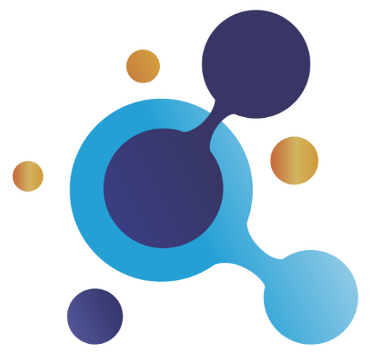
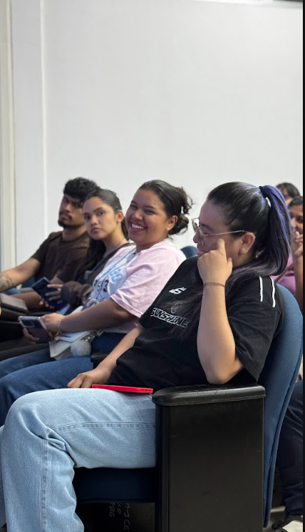
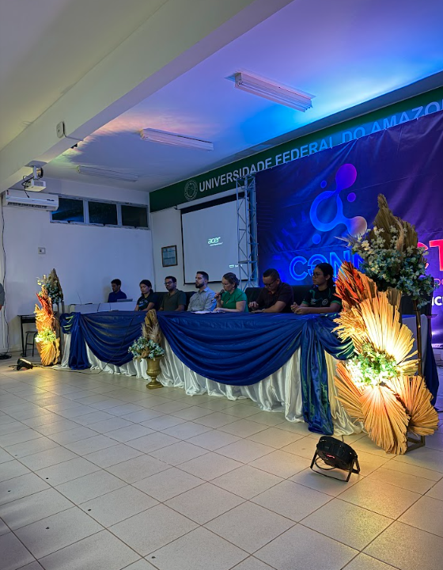
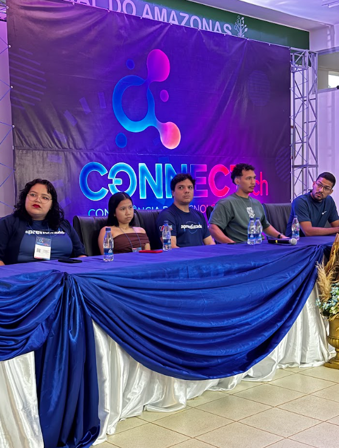
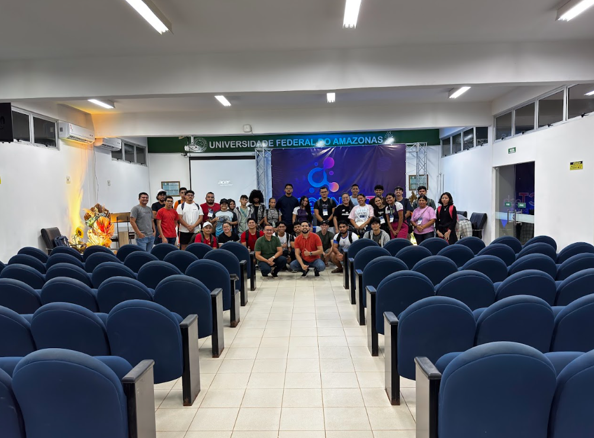
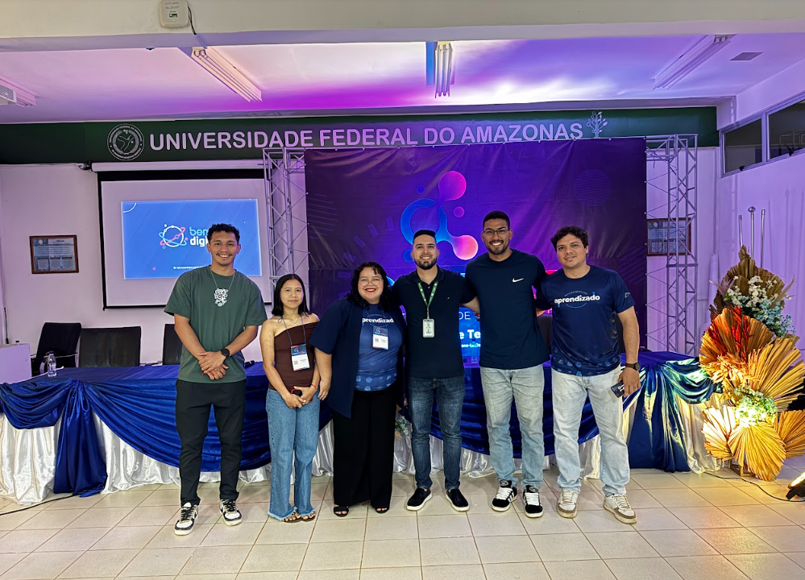
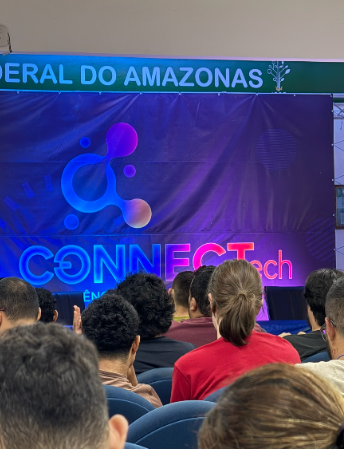
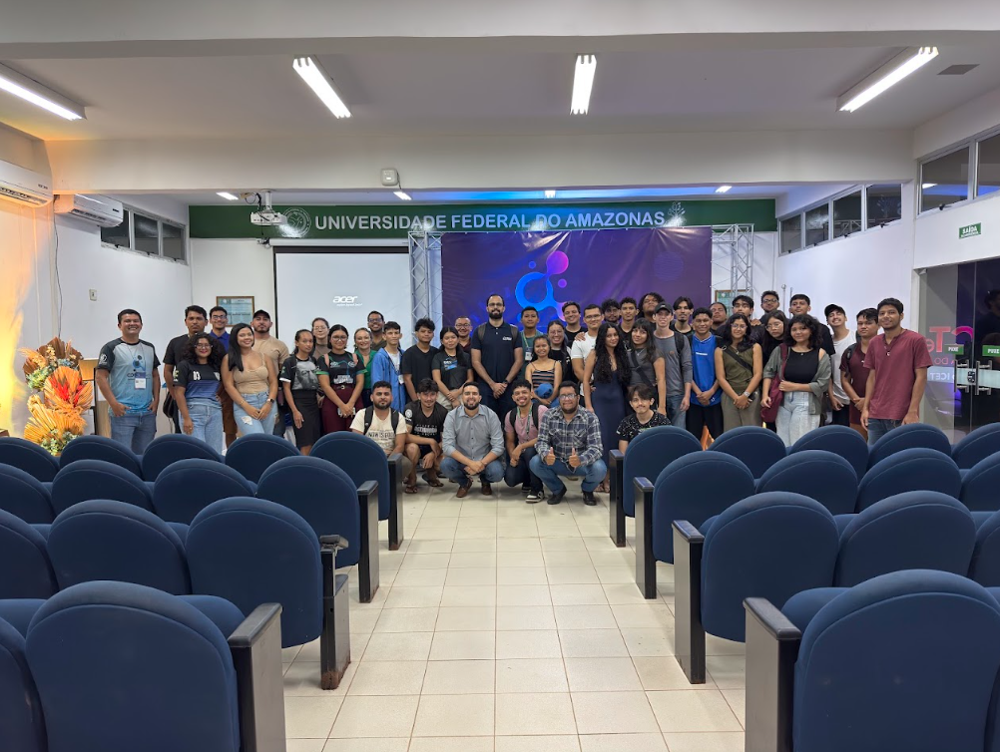
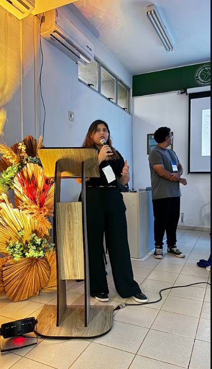
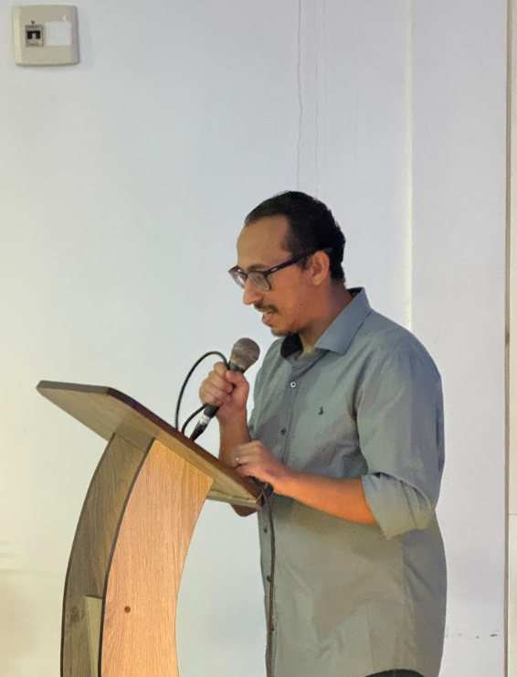
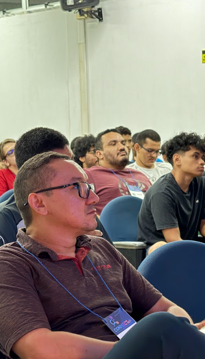
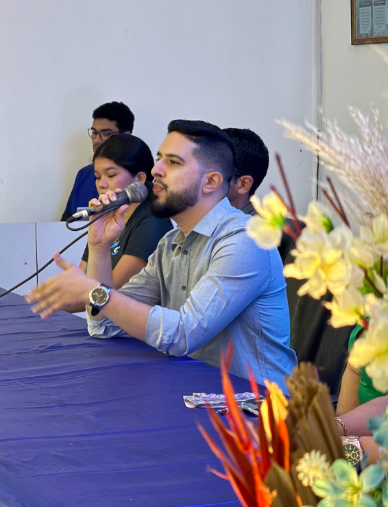
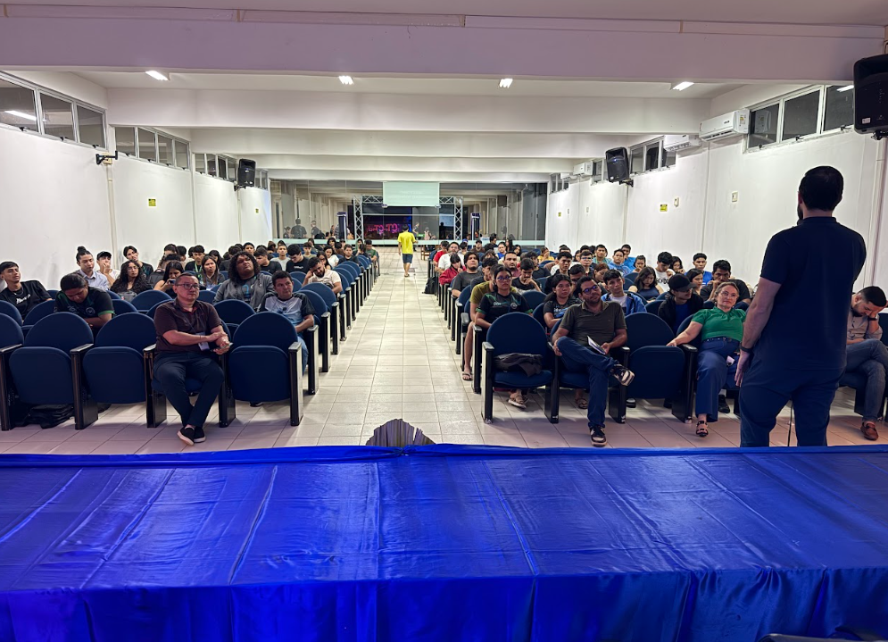
Sobre
O CONNECT Tech é um evento científico e tecnológico sem fins lucrativos, apoiado pela Sociedade Brasileira de Computação (SBC) e organizado por professores, estudantes e centros acadêmicos dos cursos de Engenharia de Software e Sistemas de Informação do Instituto de Ciências Exatas e Tecnologia (ICET) da Universidade Federal do Amazonas (UFAM).
A edição de 2026 será realizada de 24 a 27 de agosto, em Itacoatiara-AM, com o tema “Avanço exponencial de tecnologias, letramento digital e consumo sustentável da IA”. A proposta é discutir o crescimento acelerado das tecnologias digitais e da Inteligência Artificial, considerando seus impactos sociais, educacionais, econômicos e ambientais.
Realizado no interior do Amazonas, o CONNECT Tech fortalece a interiorização da ciência e da inovação, aproximando academia, mercado e sociedade. A programação contará com palestras, banners, minicursos, apresentações de artigos e trabalhos científicos, criando um espaço de formação, colaboração e troca de experiências.
Programação
Atividades acadêmicas, técnicas e científicas voltadas à formação, divulgação de pesquisas e integração entre participantes.
Discussões com convidados sobre tecnologia, IA, inovação e sociedade.


Atividades práticas para desenvolvimento técnico e formação complementar.
Integração entre universidade, comunidade, centros acadêmicos e parceiros.
Debates com pesquisadores, profissionais, estudantes e parceiros.
Socialização de pesquisas submetidas e avaliadas pelo comitê científico.
Espaço para ideias, protótipos, pesquisas em andamento e resultados preliminares.
Call For Papers
O CONNECT Tech 2026 recebe submissões relacionadas às áreas de Computação, Tecnologia, Engenharia de Software, Sistemas de Informação, Inteligência Artificial, inovação e temas correlatos.
Trilhas
O evento possui três trilhas de submissão para contemplar pesquisas consolidadas, trabalhos emergentes e artigos já publicados.
Artigos com contribuição científica clara, metodologia definida e resultados consistentes.
Ideias inovadoras, protótipos, pesquisas em andamento e resultados preliminares.
Apresentação de trabalhos já publicados em eventos ou periódicos nacionais e internacionais.
Organização
O CONNECT Tech é organizado por professores, discentes e centros acadêmicos dos cursos de Engenharia de Software e Sistemas de Informação do ICET/UFAM, com apoio da SBC, laboratórios de pesquisa e parceiros institucionais.
Comitê científico
O comitê científico é responsável pela avaliação dos trabalhos submetidos ao CONNECT Tech 2026, considerando aderência ao escopo, contribuição, clareza, qualidade metodológica e relevância para a comunidade.
FAQ
Não. A chamada não define limite máximo de autores ou coautores por trabalho submetido.
Não. Um mesmo autor ou coautor pode participar de mais de uma submissão, desde que cada trabalho siga as regras da chamada.
Os trabalhos devem seguir o template da Sociedade Brasileira de Computação, disponível na seção de chamada para trabalhos.
As submissões devem ser realizadas pela plataforma JEMS3, pelo link indicado na seção de chamada para trabalhos.
Sim, desde que o trabalho esteja adequado ao escopo da trilha escolhida: Trilha Principal, Trabalhos Emergentes ou Artigos Publicados.
Sim. Trabalhos fora do escopo, com problemas de formatação, plágio, autoplágio indevido ou baixa aderência à chamada podem não ser aceitos.
Sim. Pelo menos um dos autores deverá apresentar o trabalho aceito durante a programação científica do evento.
Para melhor funcionamento da leitura em voz alta, use preferencialmente o Google Chrome.